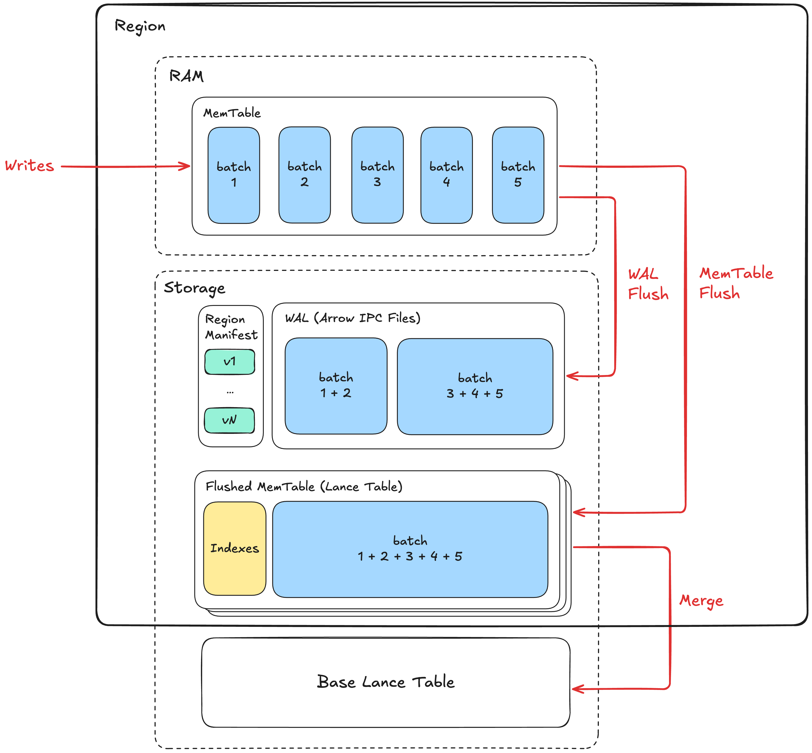

MemTable & WAL Specification (Experimental)¶
Lance MemTable & WAL (MemWAL) specification describes a Log-Structured-Merge (LSM) tree architecture for Lance tables, enabling high-performance streaming write workloads while maintaining indexed read performance for key workloads including scan, point lookup, vector search and full-text search.
Overall Architecture¶

A Lance table is called the base table in this document. The base table may have an unenforced primary key in its schema. Primary keys are required for primary-key lookups and last-write-wins upsert semantics. Append-only MemWAL tables may omit a primary key.
MemWAL adds a set of shards on top of the base table. Writers append to shards. Each shard keeps recent data in an in-memory MemTable, persists writes to a per-shard WAL, flushes MemTables as small Lance datasets, and later merges those flushed generations into the base table.
The base table manifest contains one MemWAL system index entry named __lance_mem_wal.
This index stores MemWAL configuration and global progress metadata inline in IndexMetadata.index_details.
Each shard's own manifest remains authoritative for shard-local mutable state.
MemWAL Shard¶
A MemWAL shard is the unit of horizontal write scaling. Each shard has exactly one active writer epoch at a time. Writers claim a shard, append WAL entries, update the in-memory MemTable, and publish flushed MemTable generations by updating the shard manifest.
For primary-key tables, all rows for the same primary key must map to the same shard. If one primary key can appear in multiple shards, asynchronous merge order between shards can make an older row overwrite a newer row. Append-only tables without a primary key do not rely on last-write-wins conflict resolution and may use any deterministic shard assignment suitable for the workload.
MemWAL Index¶
The MemWAL index is a system index entry on the base table.
It has name = "__lance_mem_wal", no indexed fields, and no index files.
IndexMetadata.files is None.
All MemWAL index data is stored in the MemWalIndexDetails protobuf message in IndexMetadata.index_details.
The index stores:
- Configuration:
sharding_specs,maintained_indexes, andwriter_config_defaults. - Merge progress:
merged_generations, the last generation merged into the base table for each shard. - Index catchup progress:
index_catchup, the merged generation covered by each base-table index. - Shard snapshots: optional point-in-time snapshot fields for read optimization.
Shard snapshots are not authoritative.
Readers that need the latest shard set list _mem_wal/ and read each shard's latest manifest.
Shard Architecture¶

Within a shard, writes first enter an in-memory MemTable and are durably appended to the shard write-ahead log (WAL). The MemTable is periodically flushed to storage as a Lance dataset. Flushed MemTables are asynchronously merged into the base table.
MemTable¶
A MemTable holds rows inserted into a shard before those rows are flushed to storage. It serves two purposes:
- It buffers data and per-MemTable indexes before a flushed generation is written.
- It lets readers access data that has not been flushed yet when strong consistency is required.
The storage format does not prescribe the in-memory MemTable layout. Conceptually, a MemTable is an append log of Arrow record batches. Later appends have larger in-memory row positions. For primary-key tables, in-memory reads use the largest visible row position as the newest row for a key.
MemTable Generation¶
Each MemTable has a monotonically increasing generation number starting from 1.
When generation N is flushed and discarded, the next MemTable uses generation N + 1.
Generation numbers order data freshness within one shard:
- Base table data has generation 0.
- Higher MemWAL generations are newer.
- Within the active in-memory generation, higher row positions are newer.
- Within a flushed generation, flush-time deletion vectors hide older duplicate primary-key rows, so readers see at most the newest row for each primary key.
WAL¶
The WAL is the durable append log for a shard. Every durable WAL append creates one WAL entry.
WAL Entry Positions¶
WAL entry positions are 1-based. The first data entry is position 1. Position 0 is reserved as the sentinel value meaning no WAL entry has been covered.
Writers append WAL entries in increasing position order.
If entry N is not fully written, entry N + 1 must not exist.
Recovery replays from replay_after_wal_entry_position + 1.
WAL Entry Format¶
Each WAL entry is an Apache Arrow IPC stream file. The Arrow schema metadata includes:
writer_epoch: decimal string containing the writer epoch that created the entry.fence_sentinel: optional marker for a data-less fence sentinel entry.
A normal WAL entry contains one or more record batches. A fence sentinel entry contains no batches and is skipped during replay. Sentinels are used so an older writer collides on the next WAL position and discovers that it has been fenced.
WAL Storage Layout¶
WAL entries live under _mem_wal/{shard_id}/wal/.
Filenames use bit-reversed 64-bit binary names with the .arrow suffix:
The bit-reversal spreads sequential positions across object-store keyspace. For example, position 5 is encoded as:
Flushed MemTable¶
A flushed MemTable is a persisted MemTable generation. It is stored as a Lance dataset under its shard directory.
Note
This structure is similar to a sorted string table in other LSM implementations, but MemWAL flushed generations are not sorted by key.
Flushed MemTable Storage Layout¶
Generation i is flushed to:
{random8} is an 8-character random hex value generated for each flush attempt.
If a flush attempt fails, a retry writes a different directory instead of reusing a partially written one.
The shard manifest records the successful directory name in flushed_generations.path.
The generation directory is a standard Lance dataset written with the base table's data storage version. Each flushed generation is written as one fragment. Additional MemWAL sidecars may be present:
{random8}_gen_{i}/
├── _versions/
│ └── {version}.manifest
├── _deletions/ # Present when within-generation dedup deletes rows
├── _indices/ # Present when maintained user indexes are built
│ └── {index_uuid}/
├── _pk_index/ # Primary-key sidecar BTree, not a manifest index
└── bloom_filter.bin # Primary-key bloom filter
The exact Lance dataset internals follow the Lance table storage layout.
Flushed Row Order¶
Flushed MemTable rows are written in forward insert order. Physical row offsets increase with write time. For a duplicate primary key within one flushed generation, the newest row has the largest physical offset.
Primary-key flushed generations use a deletion vector to expose last-write-wins semantics. During flush, the writer scans rows in forward order, keeps the last occurrence of each primary key, and marks all earlier duplicate offsets deleted. The deletion vector is attached to fragment 0 in the generation manifest.
Append-only flushed generations without a primary key do not perform primary-key deduplication and retain every row.
Tombstone Rows¶
Delete operations are represented as rows with the internal _tombstone column.
Tombstone rows follow the same forward row ordering and deletion-vector rules as ordinary rows.
If the newest row for a primary key is a tombstone, the deletion vector keeps that tombstone row and hides older rows for the key.
Read planning then filters _tombstone = false, so the key is absent from query results.
Flushed Primary-Key Sidecars¶
Primary-key MemTables maintain an implicit BTree for primary-key deduplication, independent of maintained_indexes.
When a primary-key MemTable is flushed, the flushed generation writes two primary-key sidecars:
bloom_filter.binstores the generation's primary-key bloom filter and lets point lookups skip generations that cannot contain the queried key._pk_index/stores a standalone BTree over primary-key values to forward row ids.
The _pk_index/ sidecar is not a maintained user index, is not registered in the generation manifest, and has no manifest UUID.
Its identity is its immutable generation path.
Readers open it directly from {generation_path}/_pk_index.
The _pk_index/ directory is a Lance scalar BTree index store:
Readers load this directory as a BTree index using BTreeIndexDetails with default parameters.
The primary-key index type is the Arrow type of the primary-key column for a single-column primary key, or Binary for a composite primary key.
The page_lookup.lance file has the following schema:
| Column | Type | Nullable | Description |
|---|---|---|---|
min |
{PrimaryKeyIndexType} | true | Minimum primary-key index value in the page |
max |
{PrimaryKeyIndexType} | true | Maximum primary-key index value in the page |
null_count |
UInt32 | false | Number of null values in the page |
page_idx |
UInt32 | false | Page number pointing into page_data.lance |
The page_data.lance file has the following schema:
| Column | Type | Nullable | Description |
|---|---|---|---|
values |
{PrimaryKeyIndexType} | true | Sorted primary-key index values |
ids |
UInt64 | false | Forward row ids corresponding to each primary-key index value |
For a single-column primary key, the indexed value stores the primary-key scalar directly. For a composite primary key, the indexed value stores an order-preserving binary tuple encoding of all primary-key columns in primary-key column order. Each tuple column is encoded as:
0x00for null.0x01followed by the non-null value encoding otherwise.
Supported non-null value encodings are:
- Signed integers and date values: sign-flipped 8-byte big-endian integer bytes.
- Unsigned integers: 8-byte big-endian unsigned integer bytes.
- Boolean: one byte,
0x00for false and0x01for true. - UTF-8 and binary values: raw bytes, with each
0x00byte escaped as0x00 0xff, followed by a0x00 0x00terminator.
This encoding is injective and preserves primary-key tuple ordering under lexicographic byte comparison. Composite primary-key columns must use one of the supported encodings above.
The sidecar row ids are in the same forward row-position space as the data files, deletion vector, and maintained user indexes. The sidecar is used for cross-generation membership and block-list checks. It is not used to choose the newest row inside the same flushed generation; the deletion vector has already hidden older same-generation duplicates.
Maintained User Indexes¶
When the MemWAL index lists maintained_indexes, flush may build matching indexes inside the flushed generation.
These index files live in the generation's _indices/{index_uuid}/ directory and are recorded in the generation manifest.
The implicit primary-key BTree sidecar is not included in maintained_indexes and does not live under _indices/.
These indexes use the same row-position space as the forward-written data files. If the generation has a primary key, the generation deletion vector masks stale duplicate rows for indexed reads as well.
Merging Flushed Generations¶
Flushed generations are merged into the base table in ascending generation order within each shard. Lower generation numbers are older and must merge before higher generation numbers. The base table merge uses merge-insert semantics so newer rows overwrite older rows for the same primary key.
Shard Manifest¶
Each shard has a versioned manifest. The latest shard manifest is the source of truth for shard-local state.
Shard Manifest Contents¶
The manifest contains:
- Identity:
shard_id,shard_spec_id, andshard_field_entries. - Fencing state:
writer_epoch. - WAL pointers:
replay_after_wal_entry_positionandwal_entry_position_last_seen. - Generation state:
current_generationandflushed_generations. - Lifecycle state:
status, eitherACTIVEorSEALED.
shard_field_entries stores computed shard field values as raw Arrow scalar bytes keyed by ShardingField.field_id.
The matching ShardingField.result_type determines how to decode each value.
For example, int32 values are four little-endian bytes and utf8 values are raw UTF-8 bytes.
replay_after_wal_entry_position is the most recent 1-based WAL position covered by a flushed generation.
The default value 0 means no WAL entry has been covered and recovery starts at position 1.
wal_entry_position_last_seen is a best-effort hint for the most recent WAL position observed at manifest update time.
It is not authoritative because it is not updated on every WAL write.
Recovery must still probe or list WAL files to find the actual tail.
status = SEALED marks a reversible in-flight drop-table operation.
Sealed shards refuse new writer claims.
The manifest is serialized as the ShardManifest protobuf message.
ShardManifest protobuf message
message ShardManifest {
// Shard identifier (UUID v4).
UUID shard_id = 11;
// Manifest version number.
// Matches the version encoded in the filename.
uint64 version = 1;
// Shard spec ID this shard was created with.
// Set at shard creation and immutable thereafter.
// A value of 0 indicates a manually-created shard not governed by any spec.
uint32 shard_spec_id = 10;
// Computed shard field values as raw Arrow scalar bytes, keyed by shard
// field id. The byte encoding follows Arrow's little-endian convention:
// int32 is 4 LE bytes, utf8 is raw UTF-8 bytes, etc. The receiver looks
// up the result_type from the ShardingSpec to interpret each value.
repeated ShardFieldEntry shard_field_entries = 14;
// Writer fencing token - monotonically increasing.
// A writer must increment this when claiming the shard.
uint64 writer_epoch = 2;
// The most recent WAL entry position that has been flushed to a MemTable.
// During recovery, replay starts from replay_after_wal_entry_position + 1.
// WAL positions are 1-based, so the default value 0 unambiguously means
// "no flush has ever stamped this shard" and recovery replays from 1.
uint64 replay_after_wal_entry_position = 3;
// The most recent WAL entry position observed at the time the manifest was
// updated. WAL positions are 1-based; default 0 means no entry has been
// written yet. This is a hint, not authoritative - recovery must list
// files to find actual state.
uint64 wal_entry_position_last_seen = 4;
// Next generation ID to create (incremented after each MemTable flush).
uint64 current_generation = 6;
// Field 7 removed: merged_generation moved to MemWalIndexDetails.merged_generations
// which is the authoritative source for merge progress.
// List of flushed MemTable generations and their directory paths.
repeated FlushedGeneration flushed_generations = 8;
// Lifecycle status. Default ACTIVE; SEALED marks an in-flight drop
// (drop-table 2PC). A SEALED manifest refuses claims at claim_epoch.
ShardStatus status = 15;
}
Shard Manifest Versioning¶
Manifest versions start at 1. Each update writes a new immutable protobuf file:
Writers use put-if-not-exists or atomic rename, depending on storage support. If two processes race to write the same next version, one wins and the other reloads and retries.
After a successful version write, the writer best-effort updates:
in:
Readers use version_hint.json as a starting point and then probe subsequent versions until a version is missing.
The latest manifest is the last existing version.
MemWAL Index Details¶
The MemWAL index is stored inline in the base table's IndexMetadata.
It is a system index with no file directory.
The index_details field contains a MemWalIndexDetails protobuf message.
Important fields:
sharding_specs: sharding configuration used by writers and shard pruning.maintained_indexes: names of base-table indexes to maintain in MemTables and flushed generations.writer_config_defaults: string map of default writer configuration values persisted for all writers.merged_generations: per-shard merge progress, updated atomically with base-table merge commits.index_catchup: per-index coverage progress after data has merged to the base table.snapshot_ts_millis,num_shards, andinline_snapshots: optional shard snapshot fields for read optimization.
If a shard is absent from index_catchup for an index, that index is assumed to be fully caught up for the shard.
Shard snapshots, when present, use the following Lance file schema:
| Column | Type | Nullable | Description |
|---|---|---|---|
shard_id |
Utf8 | false | Shard UUID string |
shard_spec_id |
UInt32 | false | Sharding spec that produced the shard |
shard_field_{field_id} |
ShardingField.result_type |
false | Computed shard field value for the given sharding field |
The MemWAL index data is stored inline.
Readers discover the latest shard set by listing _mem_wal/ shard directories and reading shard manifests.
MemWalIndexDetails protobuf message
message MemWalIndexDetails {
// Snapshot timestamp (Unix timestamp in milliseconds).
int64 snapshot_ts_millis = 1;
// Number of shards in the snapshot.
// Used to determine storage format without reading the snapshot data.
uint32 num_shards = 2;
// Inline shard snapshots for small shard counts.
// When num_shards <= threshold (implementation-defined, e.g., 100),
// snapshots are stored inline as serialized bytes.
// Format: Lance file bytes with the shard snapshot schema.
optional bytes inline_snapshots = 3;
// Sharding specs defining how to derive shard identifiers.
// This configuration determines how rows are partitioned into shards.
repeated ShardingSpec sharding_specs = 7;
// Indexes from the base table to maintain in MemTables.
// These are index names referencing indexes defined on the base table.
// The primary key btree index is always maintained implicitly and
// should not be listed here.
//
// For vector indexes, MemTables inherit quantization parameters (PQ codebook,
// SQ params) from the base table index to ensure distance comparability.
repeated string maintained_indexes = 8;
// Last generation merged to base table for each shard.
// This is updated atomically with merge-insert data commits, enabling
// conflict resolution when multiple mergers operate concurrently.
//
// Note: This is separate from shard snapshots because:
// 1. merged_generations is updated by mergers (atomic with data commit)
// 2. shard snapshots are updated by background index builder
repeated MergedGeneration merged_generations = 9;
// Per-index catchup progress tracking.
// When data is merged to the base table, base table indexes are rebuilt
// asynchronously. This field tracks which generation each index covers.
//
// For indexed queries, if an index's caught_up_generation < merged_generation,
// readers should use flushed MemTable indexes for the gap instead of
// scanning unindexed data in the base table.
//
// If an index is not present in this list, it is assumed to be fully caught up.
repeated IndexCatchupProgress index_catchup = 10;
// Default ShardWriter configuration values for this MemWAL index.
//
// A free-form string map persisted so that every writer — across
// processes and restarts — starts from the same default writer
// configuration. These are defaults only: an individual writer may
// still override any value at runtime in its own ShardWriterConfig
// (which is not persisted).
map<string, string> writer_config_defaults = 11;
}
Sharding¶
A ShardingSpec defines how rows map to shards.
Each spec has a positive spec_id and one or more ShardingField entries.
Each shard manifest records the shard_spec_id and the computed shard field values for that shard.
spec_id = 0 means the shard was manually created and is not governed by a sharding spec.
Each ShardingField contains:
field_id: stable identifier for the computed shard field.source_ids: field IDs of source columns in the Lance schema.transform: well-known transform name, when using built-in transform evaluation.expression: reserved custom expression text, mutually exclusive withtransform.result_type: Arrow type name for the computed value.parameters: transform-specific string parameters.
The supported built-in transforms are:
unsharded: takes no source columns, always returnsint32value 0, and creates one shard.bucket: takes one source column andnum_buckets, hashes the value, and returns anint32bucket id in[0, num_buckets).identity: takes one source column and returns the raw scalar value as the shard value.
bucket computes a deterministic 32-bit hash with seed 0 and then computes:
num_buckets must be in [1, 1024].
Null bucket values hash to 0 and therefore map to bucket 0.
See Appendix 3: Bucket Hashing for the exact hash algorithm and test vectors.
The bucket transform supports scalar boolean, integer, floating-point, date32, time, timestamp, utf8, and large_utf8 source types.
The identity transform supports scalar boolean, integer, utf8, and large_utf8 source types.
The year, month, day, hour, multi_bucket, and truncate transform names are not supported MemWAL sharding transforms and must not be used in ShardingSpec.transform.
Storage Layout¶
The MemWAL storage layout is:
{table_path}/
├── _versions/
│ └── ... # Base table manifests, including __lance_mem_wal index metadata
├── _indices/
│ └── ... # Ordinary base table index files; MemWAL index has no files
└── _mem_wal/
└── {shard_id}/
├── manifest/
│ ├── {bit_reversed_version}.binpb
│ └── version_hint.json
├── wal/
│ ├── {bit_reversed_position}.arrow
│ └── ...
└── {random8}_gen_{generation}/
├── _versions/
│ └── {version}.manifest
├── _deletions/
├── _indices/
│ └── {index_uuid}/
├── _pk_index/
└── bloom_filter.bin
Some flushed-generation subdirectories are conditional.
For example, _deletions/ is present only when the generation manifest references a deletion vector, _indices/ is present only when maintained user indexes are built, and _pk_index/ plus bloom_filter.bin are meaningful for primary-key tables.
Implementation Expectation¶
This document specifies the storage layout and observable reader and writer invariants. Implementations may choose different in-memory structures, buffering policies, background scheduling, and query execution plans.
An implementation is compatible when it:
- Writes WAL entries, shard manifests, flushed generations, and MemWAL index metadata using the documented layout.
- Preserves WAL position, writer fencing, and manifest versioning invariants.
- Exposes last-write-wins semantics for primary-key tables.
- Preserves append-only semantics for tables without primary keys.
- Maintains generation ordering when merging flushed MemTables into the base table.
Writer Expectations¶
A writer operates on one shard and is responsible for:
- Claiming the shard with epoch-based fencing.
- Appending WAL entries in sequential 1-based positions.
- Maintaining in-memory MemTable state.
- Flushing MemTable generations to Lance datasets.
- Updating the shard manifest after a generation is durably flushed.
Writer Fencing¶
Writers use writer_epoch to enforce single-writer semantics per shard.
To claim a shard:
- Load the latest shard manifest.
- Verify the shard is
ACTIVE. - Increment
writer_epoch. - Atomically write a new manifest version.
- If the manifest write loses a race, reload and retry.
Before a manifest update, a writer verifies its local epoch is still current:
- If
local_writer_epoch == stored_writer_epoch, the writer may proceed. - If
local_writer_epoch < stored_writer_epoch, the writer has been fenced and must abort.
WAL append conflicts also detect fencing. If an older writer collides with a newer writer's WAL entry at the same position, it reloads the manifest and observes the higher epoch. Fence sentinel entries make this collision path explicit without storing data batches.
Background Job Expectations¶
Background jobs merge flushed generations into the base table and remove obsolete shard data.
MemTable Merger¶
Flushed MemTables must merge into the base table in ascending generation order within each shard.
The merge uses Lance merge-insert semantics and updates merged_generations[shard_id] atomically with the base-table commit.
On commit conflict, a merger reloads the conflicting base-table version:
- If the committed
merged_generations[shard_id]is already greater than or equal to the generation being merged, the merger skips that generation. - Otherwise, the merger retries from the latest base-table version.
Garbage Collector¶
The garbage collector may remove obsolete flushed generations after:
- The generation has been merged to the base table.
- Every maintained index has caught up to cover the merged generation, or the generation is no longer needed for indexed reads.
- No retained base-table version needs the generation for time travel or consistency.
Warning
Deleting WAL files can weaken writer fencing.
Fencing detects a stalled writer when its put-if-not-exists for the next WAL entry collides with a newer writer's entry at the same position.
If garbage collection has removed that WAL file, the stalled writer may write into empty space with an old writer_epoch.
Implementations that garbage collect WAL files must compensate by re-checking fence state after WAL writes, partitioning WAL positions by epoch, or otherwise preventing stale writers from landing at positions that have been garbage collected.
Reader Expectations¶
LSM Tree Merging Read¶
For primary-key tables, readers merge rows from the base table, flushed MemTables, and optionally in-memory MemTables by primary key. The newest row wins.
Freshness ordering within one shard is:
- Higher generation wins.
- Within the active in-memory generation, higher row position wins.
- Within a flushed generation, the generation's deletion vector has already hidden older duplicate primary-key rows.
The base table has generation 0.
MemWAL generations are positive.
This ordering applies only to sources selected for the same read plan.
Readers must not include a flushed generation that is already covered by the base table according to merged_generations[shard_id], because otherwise the positive MemWAL generation would incorrectly outrank base-table rows during deduplication.
Rows from different shards do not need primary-key deduplication if the sharding spec guarantees that each primary key maps to exactly one shard.
Append-only tables without a primary key do not perform primary-key deduplication. Rows from all selected sources are distinct appended rows.
Tombstones¶
Readers must treat _tombstone = true rows as delete markers.
In flushed generations, deletion vectors first resolve same-generation duplicate primary keys.
Then query planning filters tombstone rows from user-visible results.
In active in-memory MemTables, the newest visible row position for a primary key wins; if that row is a tombstone, the key is absent.
Reader Consistency¶
Reader consistency depends on:
- Whether the reader can access active in-memory MemTables.
- Whether shard metadata comes from latest shard manifests or from an older MemWAL index snapshot.
Strong consistency requires active in-memory MemTable access for relevant shards and direct reads of latest shard manifests. Otherwise, reads are eventually consistent because unflushed data or newly-created shards may be absent from the read plan.
Reading a stale MemWAL index snapshot does not corrupt last-write-wins ordering, but it can reduce freshness:
- If a merged flushed generation is still listed, readers must skip it when
generation <= merged_generations[shard_id]. For primary-key tables, including it would let an older flushed row outrank newer base-table contents because MemWAL generations are positive and the base table is modeled as generation 0. For append-only tables, including it would return the same append twice. - If a garbage-collected flushed generation is still listed, readers may skip it after failing to open it because its data must already be in the base table or be filtered out by
merged_generations. - If a newly flushed generation is not listed, the read is consistent with the older snapshot but may miss fresher data.
Readers that require latest shard membership should list _mem_wal/ and read shard manifests instead of relying only on snapshots.
Query Planning¶
A query planner collects sources from:
- The base table.
- Flushed MemTables that are not yet safely replaceable by base-table indexed reads.
- Active in-memory MemTables, when available and required by the requested consistency level.
Each source is tagged with its shard and generation. For primary-key reads, the planner applies LSM deduplication across selected sources. For append-only reads, the planner concatenates selected sources without primary-key deduplication.
Bloom filters and _pk_index/ sidecars help prune flushed generations during point lookups and cross-generation deduplication.
Shard Pruning¶
When sharding specs are available, the planner evaluates query predicates against shard fields and skips shards whose computed shard values cannot match.
For example, with bucket(user_id, 10) and predicate user_id = 123:
- Compute the bucket id for
123. - Scan only shards whose manifest has the same computed bucket value.
- Skip all other bucket shards.
Indexed Read Plan¶
When data is merged from a flushed MemTable into the base table, base-table indexes may lag behind the data commit.
index_catchup records which merged generation each base-table index covers.
If an indexed query needs index I and I has only caught up to generation G while merged_generations[shard_id] is higher, the planner should read the gap from flushed-generation indexes instead of scanning unindexed base-table rows.
Once index I catches up, the planner can use the base-table index for those merged rows.
Appendices¶
Appendix 1: Writer Fencing Example¶
Initial shard manifest:
version: 1
writer_epoch: 5
replay_after_wal_entry_position: 10
wal_entry_position_last_seen: 12
status: ACTIVE
Writer A loads version 1, claims epoch 6, and writes manifest version 2.
It appends WAL entries 13, 14, and 15 with writer_epoch = 6.
Writer B then loads version 2, claims epoch 7, and writes manifest version 3.
It appends WAL entries 16 and 17 with writer_epoch = 7.
When Writer A later tries to flush or update the shard manifest, it reloads the manifest and sees stored epoch 7 while its local epoch is 6. Writer A is fenced and must abort.
Recovery starts from replay_after_wal_entry_position + 1, which is entry 11.
Entries 13, 14, 15, 16, and 17 are valid replay inputs because they were written by epochs that were valid at write time and are not greater than the current shard epoch.
Appendix 2: Concurrent Merger Example¶
Initial state:
MemWAL index:
merged_generations: {shard: 5}
Shard manifest:
current_generation: 8
flushed_generations:
- generation: 6, path: "abc12345_gen_6"
- generation: 7, path: "def67890_gen_7"
Two mergers both try to merge generation 6.
Merger A commits first and updates merged_generations[shard] to 6 in the same base-table commit as the data.
Merger B then hits a commit conflict, reloads the latest MemWAL index, sees merged_generations[shard] >= 6, skips generation 6, and continues with generation 7.
The MemWAL index is the authoritative merge-progress record because it is committed atomically with the base-table data changes.
Appendix 3: Bucket Hashing¶
The bucket transform hash uses 32-bit wrapping arithmetic with these mixing functions.
Right shifts in fmix are logical shifts of the u32 bit pattern.
mix_k1(k) = rotl32(k * 0xcc9e2d51, 15) * 0x1b873593
mix_h1(h, k) = rotl32(h ^ k, 13) * 5 + 0xe6546b64
fmix(h, len) =
h = h ^ len
h = (h ^ (h >> 16)) * 0x85ebca6b
h = (h ^ (h >> 13)) * 0xc2b2ae35
h ^ (h >> 16)
Signed and unsigned casts use two's-complement wrapping. Values are normalized and hashed as follows:
bool:falseas0,trueas1, thenhash_i32.int8,int16,int32,uint8,uint16,uint32,date32,time32: cast toi32, thenhash_i32.int64,uint64,timestamp,time64: cast toi64, thenhash_i64.float32:-0.0and+0.0normalize to bits0; all NaNs normalize to0x7fc00000; other values use IEEE 754 bits cast toi32, thenhash_i32.float64:-0.0and+0.0normalize to bits0; all NaNs normalize to0x7ff8000000000000; other values use IEEE 754 bits cast toi64, thenhash_i64.utf8andlarge_utf8: hash the UTF-8 bytes withhash_bytes.
The helper hashes are:
hash_i32(v) = fmix(mix_h1(0, mix_k1(v)), 4)
hash_i64(v) =
low = low 32 bits of v as i32
high = high 32 bits of v as i32
fmix(mix_h1(mix_h1(0, mix_k1(low)), mix_k1(high)), 8)
hash_bytes(bytes) =
h = 0
for each complete 4-byte little-endian chunk:
h = mix_h1(h, mix_k1(chunk_as_i32))
for each remaining byte:
h = mix_h1(h, mix_k1(sign_extend_i8(byte)))
fmix(h, byte_length)
Test vectors for num_buckets = 8:
int32ordate32:1 -> 2,2 -> 7,null -> 0,3 -> 1.utf8:"a" -> 1,"b" -> 5,null -> 0.bool:true -> 2.float32:1.25 -> 0.float64:1.25 -> 0.